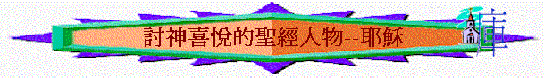

一.討神喜悅的孩童
路2:46 過了三天，就遇見他在殿�堙A坐在教師中間，一面聽，一面問。
路2:47 凡聽見他的，都希奇他的聰明和他的應對。
路2:48 他父母看見就很希奇。他母親對他說：「我兒！為甚麼向我們這樣行呢？看哪，你父親和我傷心來找你！」
路2:49 耶穌說：「為甚麼找我呢？豈不知我應當以我父的事為念嗎（或譯：豈不知我應當在我父的家�媔隉^？」
路2:50 他所說的這話，他們不明白。
路2:51 他就同他們下去，回到拿撒勒，並且順從他們。他母親把這一切的事都存在心�堙C
路2:52 耶穌的智慧和身量（或譯：年紀），並 神和人喜愛他的心，都一齊增長。
∼耶穌在年少時，神和人喜愛他的心，都一齊增長。祂為什麼得神喜愛？
1.以父的事為念
∼平常小朋友第一次按著猶太人的規矩，來到耶路撒冷守節，通常留意的是身邊好奇及新奇的事，主第一次來到耶路撒冷，他所掛念及追求的是聖殿及律法的事，他以父的事為念先
2.以聖殿為父家
∼以我父的事為念嗎或譯豈不知我應當在我父的家�媔隉A耶穌的父母忘於找兒子回家鄉，但主以聖殿為天父及自己的家
3.順從地上父母
∼按屬靈的角度，主比地上的父母更高權柄，祂可用自己的身份吩咐地上父母作事，但祂卻沒有運用，祂成為人的樣式，仍學習順從父母
二.討神喜悅的兒子
太3:13 當下，耶穌從加利利來到約旦河，見了約翰，要受他的洗。
太3:14 約翰想要攔住他，說：「我當受你的洗，你反倒上我這�堥荈隉H」
太3:15 耶穌回答說：「你暫且許我，因為我們理當這樣盡諸般的義（或譯：禮）。」於是約翰許了他。
太3:16 耶穌受了洗，隨即從水�堣W來。天忽然為他開了，他就看見 神的靈彷彿鴿子降下，落在他身上。
太3:17 從天上有聲音說：「這是我的愛子，我所喜悅的。」
約8:26 我有許多事講論你們，判斷你們；但那差我來的是真的，我在他那�堜疻巨ㄙ滿A我就傳給世人。」
約8:27 他們不明白耶穌是指著父說的。
約8:28 所以耶穌說：「你們舉起人子以後，必知道我是基督，並且知道我沒有一件事是憑著自己做的。我說這些話乃是照著父所教訓我的。
約8:29 那差我來的是與我同在；他沒有撇下我獨自在這�堙A因為我常做他所喜悅的事。」
約8:30 耶穌說這話的時候，就有許多人信他。
1.明證
A.聖靈的臨在
∼當時的時代，不是所有人有神的靈臨在，主受洗後，神的靈彷彿鴿子降下，落在他身上，更印證祂不是普通人，是神所認定的愛子
B.神親自明證
∼耶穌受洗後，天上有聲聲音說：「這是我的愛子，我所喜悅的。」父神在約翰及眾人面前明證主是天父所愛的，是神喜悅的兒子
C.父常與同在
∼神沒有撇下耶穌，因主常做天父所喜悅的事，神常與祂同在，就足證主是父所喜悅的
2.表現
A.盡諸般的義
∼主其實不需要施洗約翰為祂施洗的，祂比他更大，但作為天父的兒子，祂願盡地上諸般的義（為正為好的事），神就在此時，更親口表明祂是天父所喜悅的愛子
B.忠心見證父
∼祂來到世間的目的，是要為差來者作見證，表明天父的真實
C.不憑己行事
∼祂沒有一件事是憑著自己做的。祂是照天父給祂的心意與權能作的
D.作父喜悅事
∼祂不是作自己喜悅的事，乃是常作天父所喜悅的事。
3.回應
A.人要聽從主
太17:4 彼得對耶穌說：「主啊，我們在這�堹u好！你若願意，我就在這�媟f三座棚，一座為你，一座為摩西，一座為以利亞。」
太17:5 說話之間，忽然有一朵光明的雲彩遮蓋他們，且有聲音從雲彩�堨X來，說：「這是我的愛子，我所喜悅的。你們要聽他！」
∼在登山變像中，門徒忽然從雲彩�媗巨鴞麥n音出來，說：「這是我的愛子，我所喜悅的。你們要聽他！」父神要門徒知道主是天父所喜悅的愛子，祂的身份比摩西及以利亞更尊貴，人要順服天父的愛子
B.人要見證主
彼後1:16 我們從前將我們主耶穌基督的大能和他降臨的事告訴你們，並不是隨從乖巧捏造的虛言，乃是親眼見過他的威榮。
彼後1:17 他從父 神得尊貴榮耀的時候，從極大榮光之中有聲音出來，向他說：「這是我的愛子，我所喜悅的。」
彼後1:18 我們同他在聖山的時候，親自聽見這聲音從天上出來。
∼天父要彼得看見及聽見主的威榮及主是神喜悅的愛子的另一個原因，是要他將親眼看見及親耳聽見這位尊貴榮耀的主傳揚出來，要為祂作見證人
三.討神喜悅的義僕
太12:15 耶穌知道了，就離開那�堙A有許多人跟著他。他把其中有病的人都治好了；
太12:16 又囑咐他們，不要給他傳名。
太12:17 這是要應驗先知以賽亞的話，說：
太12:18 看哪！我的僕人，我所揀選、所親愛、心�堜珜蒏悚滿A我要將我太的靈賜給他；他必將公理傳給外邦。
太12:19 他不爭競，不喧嚷；街上也沒有人聽見他的聲音。
太12:20 壓傷的蘆葦，他不折斷；將殘的燈火，他不吹滅；等他施行公理，叫公理得勝。
太12:21 外邦人都要仰望他的名。
賽42:1 看哪，我的僕人─我所扶持所揀選、心�堜珜蒏悚滿I我已將我的靈賜給他；他必將公理傳給外邦。
賽42:2 他不喧嚷，不揚聲，也不使街上聽見他的聲音。
賽42:3 壓傷的蘆葦，他不折斷；將殘的燈火，他不吹滅。他憑真實將公理傳開。
賽42:4 他不灰心，也不喪膽，直到他在地上設立公理；海島都等候他的訓誨。
∼聖經不單說主是神喜悅的兒子，祂也是神揀選及心�堜珜蒏悚犒略H
1.神所喜悅之義僕內涵
A.不爭競
∼祂不會和法利賽人及祭司爭取地上的名聲
B.不喧嚷
∼即或祂在地上行了很多神蹟及醫治了許多人，祂仍不喧嚷自己的成就，反叫人不要傳開
C.不灰心
∼即或有些猶太人質疑祂所作，祂行了很多神蹟，有些人仍不信祂，但祂沒有灰心，只忠心等候及完成差祂來者的工作
D.不喪膽
∼有些人更商議要殺祂，但祂不喪膽，沒畏縮停止祂在地上的工作
E.滿憐憫
∼壓傷的蘆葦，祂不折斷；將殘的燈火，祂不吹滅，祂在地上見到很多有病困苦的人，祂沒有不理他們，卻醫治憐憫他們
2.神所喜悅之義僕工作
A.將真理傳開
賽42:3 壓傷的蘆葦，他不折斷；將殘的燈火，他不吹滅。他憑真實將公理傳開。
B.作眾民中保
賽42:6 我耶和華憑公義召你，必攙扶你的手，保守你，使你作眾民的中保（中保：原文作約），作外邦人的光，
C.外邦人之光
賽42:7 開瞎子的眼，領被囚的出牢獄，領坐黑暗的出監牢。
四.天父卻喜悅將主壓傷
詩22:7 凡看見我的都嗤笑我；他們撇嘴搖頭，說：
詩22:8 他把自己交託耶和華，耶和華可以救他吧！耶和華既喜悅他，可以搭救他吧！
賽53:10 耶和華卻定意（或譯：喜悅）將他壓傷，使他受痛苦。耶和華以他為贖罪祭（或譯：他獻本身為贖罪祭）。他必看見後裔，並且延長年日。耶和華所喜悅的事必在他手中亨通。
實53:11 他必看見自己勞苦的功效，便心滿意足。有許多人因認識我的義僕得稱為義；並且他要擔當他們的罪孽。
1.神沒有搭救愛子
2.神喜悅將祂壓傷
∼很難想像的是主既然是父神所喜悅的，但在十字架上，天父沒有救祂所喜悅的兒子，也沒有免去祂的痛苦，反而神定意（或譯：喜悅）將他壓傷，使他受痛苦。
∼天父雖喜悅愛子，但祂也深愛我們，甘願定意將祂的獨生子賜給我們，使祂受苦，而使我們免受罪的刑罰
∼今天我們又可以對這位為我們連自己愛子也可犧牲的天父，又有什麼回應呢？
∼我們願不願意效法主成為討父所喜悅的人呢？